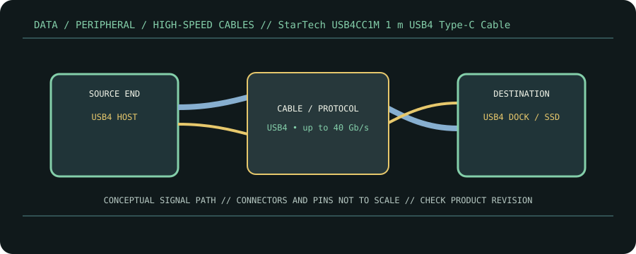

[ CABLE PRODUCT RECORD // STARTECH.COM USB4CC1M / CC1M-40G-USB-CABLE ]
StarTech USB4CC1M 1 m USB4 Type-C Cable
USB Type-C male ↔ USB Type-C male USB4 cable. This entry documents the named product model, not a universal guarantee for all cables with the same connector.

CLASSIFICATION: Data, peripheral, and high-speed cables. Model-specific facts below are sourced; negotiated operation remains limited by the connected devices.
Interface and capability
| Product / protocol | StarTech.com USB4CC1M / CC1M-40G-USB-CABLE. USB4 up to 40 Gb/s; compatible modes include Thunderbolt 3/4 and USB 3.x/USB 2.0 subject to endpoints. |
|---|---|
| Connector type | USB-C male at both ends; model listing describes a 1 m USB4 cable with an electronically marked cable assembly. |
| Electrical / length limits | 1 m; rated for up to 40 Gb/s data and up to 100 W (20 V/5 A) charging on the specified SKU. Actual power and data modes are negotiated with the host and sink. |
| Revision-specific compatibility | A 40 Gb/s link requires compatible USB4/Thunderbolt endpoints. With USB 3.x or USB 2.0 endpoints the link falls back to their supported mode. DisplayPort tunneling/video requires host and display support. |
Compatibility & handling
- Confirm the printed part number/USB4 certification mark: USB-C appearance does not indicate USB4 speed, video, or charging wattage.
- Do not assume all 1 m USB-C cables are 40 Gb/s or 5 A; use this SKU’s specification and E-marker identity.
- Use the negotiated power profile and device limits; the stated 100 W ceiling is not equivalent to USB PD 3.1 240 W EPR.
Sources & further reading
- StarTech — 1 m USB4 40 Gb/s USB-C cableProduct-specific capability and cable description.
- StarTech.com — USB 2.0 cable products and connector familiesManufacturer cable-family reference for connector and generation selection.
- USB-IF — USB4 Specification v2.0USB4 protocol requirements and link architecture.
- USB-IF — USB Type-C Cable and Connector SpecificationCable marking, current and USB-C cable requirements.